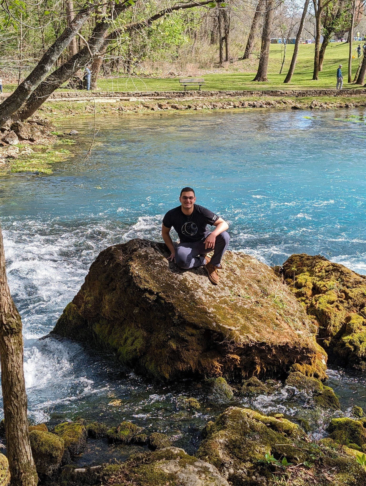

|
|
AboutHello! My name is Lazo Attar and I'm a second-year electrical engineering student studying at the Georgia Institute of Technology. My concentrations are in telecommunications and circuit technology. I love the fields of telecommunications and electromagnetics, and I aspire to bring profound impact to these fields of engineering. Outside of school, I'm from Houston, TX and I love me some barbeque. Brisket and burnt ends are my favorite even though Kansas has the latter better. I enjoy the Great Outdoors and I love to go hiking, hunting, and kayaking. At Georgia Tech, I am heavliy involved in the Georgia Tech Experimental Rocketry Club as the flight computer lead. I love rockets and building computers for them is super exciting! I am also a Peer Instructor at the Hive Makerspace on campus and help users of the makerspace out with their awesome projects. It's always amazing to see the cool ideas my peers have and satisfying to help someone out with their project. Career-wise I am currently seeking an internship for Summer 2025 in RF electronics or digital signal processing. I plan on completing by B.S.E.E. degree by Spring of 2026 and my M.S.E.E. by Spring of 2027 at Georgia Tech. After college I plan on working at an Aerospace or defense company designing novel waveforms. |